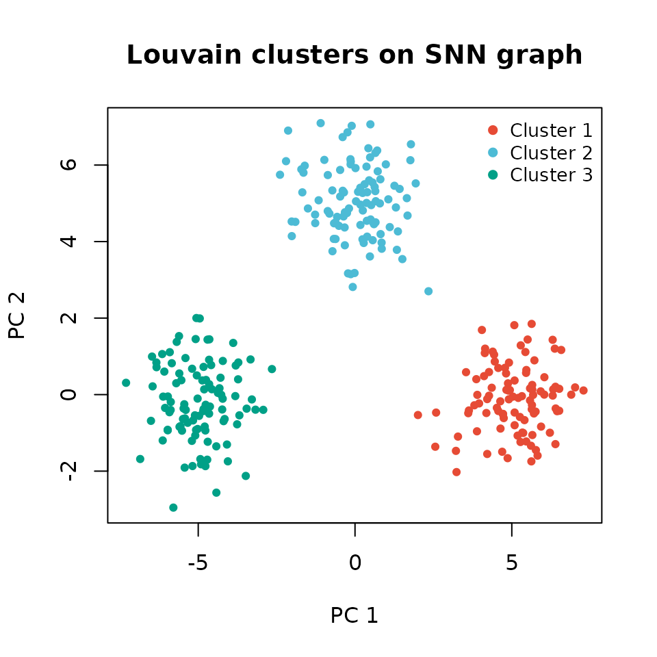

jvecfor: Fast K-Nearest Neighbor Search for Single-Cell Analysis
Anestis Gkanogiannis
anestis@gkanogiannis.com2026-09-27
Source:vignettes/jvecfor_vignette.Rmd
jvecfor_vignette.RmdAbstract
jvecfor provides fast k-nearest neighbor (KNN)
and nearest-neighbor graph construction for single-cell genomics.
Powered by the jvector Java library, it delivers
HNSW-DiskANN approximate search and VP-tree exact search with SIMD
acceleration (AVX2/AVX-512), achieving approximately 2× speedup
over Annoy-based BiocNeighbors::findKNN at n ≥ 100K
cells while maintaining a fully compatible output format suitable
for drop-in use in Bioconductor workflows.
Introduction
jvecfor is a high-performance KNN library for Bioconductor single-cell workflows. It wraps a Java library, built on top of jvector, which implements two algorithms:
-
HNSW-DiskANN (
type = "ann") – approximate KNN via Hierarchical Navigable Small World graphs, with SIMD-accelerated distance computation (AVX2/AVX-512). O(log n) query time; ~2× faster than BiocNeighbors at n ≥ 100K cells. -
VP-tree (
type = "knn") — exact KNN using vantage-point trees. Deterministic; ideal for small datasets or ground-truth validation.
The R package communicates with the JVM via system2() —
no JNI, no rJava
dependency. The JAR is bundled in inst/java/ and requires
no separate installation step beyond having Java 20+ on your
PATH.
Function overview
| Function | Description | Returns |
|---|---|---|
fastFindKNN() |
Core KNN search | list($index, $distance) |
fastMakeSNNGraph() |
KNN → shared nearest-neighbor graph |
igraph object |
fastMakeKNNGraph() |
KNN → k-nearest-neighbor graph |
igraph object |
jvecfor_setup() |
Copy a custom JAR into the package | path (invisibly) |
The output of fastFindKNN() is a named list with
$index (n × k integer matrix, 1-based) and
$distance (n × k numeric matrix), identical in structure to
BiocNeighbors::findKNN().
Prerequisites and Setup
Java version
jvecfor requires Java ≥ 20 on PATH. The
JAR uses the jdk.incubator.vector module for SIMD
acceleration. Check your installation:
system2("java", "--version") # should print openjdk 20 or higherIf java is not found, install Eclipse Temurin or any OpenJDK 20+
distribution and ensure the java binary is on your
PATH. ## Package options
Two global options control runtime behaviour:
| Option | Default | Effect |
|---|---|---|
jvecfor.verbose |
FALSE |
Pass --verbose to jvecfor, printing HNSW
build progress to stderr. |
jvecfor.jar |
NULL |
Use a custom JAR instead of the one bundled in
inst/java/. |
Set them persistently in your .Rprofile or
per-session:
Custom JAR setup
The bundled JAR is installed automatically. If you have compiled a custom jvecfor build:
# Auto-finds target/jvecfor-*.jar relative to the working directory
jvecfor_setup()
# Or provide the path explicitly
jvecfor_setup(jar_path = "/path/to/jvecfor-x.y.z.jar")Quick Start
library(jvecfor)
# Simulate 300 cells × 30 principal components
set.seed(42)
pca <- matrix(rnorm(300 * 30), nrow = 300, ncol = 30)
# Find 15 nearest neighbours (HNSW-DiskANN approximate, Euclidean)
nn <- fastFindKNN(pca, k = 15)
str(nn)
#> List of 2
#> $ index : int [1:300, 1:15] 271 263 125 158 271 241 210 2 153 235 ...
#> ..- attr(*, "dimnames")=List of 2
#> .. ..$ : NULL
#> .. ..$ : chr [1:15] "V1" "V2" "V3" "V4" ...
#> $ distance: num [1:300, 1:15] 0.0508 0.0396 0.0471 0.0409 0.0331 ...
#> ..- attr(*, "dimnames")=List of 2
#> .. ..$ : NULL
#> .. ..$ : chr [1:15] "V16" "V17" "V18" "V19" ...The result is a two-element list. $index is a 300 × 15
integer matrix of 1-based neighbor indices; $distance is a
300 × 15 numeric matrix of Euclidean distances.
Core Function: fastFindKNN()
Output structure
dim(nn$index) # 300 x 15
#> [1] 300 15
dim(nn$distance) # 300 x 15
#> [1] 300 15
class(nn$index) # "integer" — 1-based, same as BiocNeighbors
#> [1] "matrix" "array"
class(nn$distance) # "numeric"
#> [1] "matrix" "array"
# No zeros in index (1-based) and all values within [1, nrow(pca)]
range(nn$index)
#> [1] 1 298This output is structurally identical to
BiocNeighbors::findKNN(), so existing code that passes
nn$index to bluster
or other Bioconductor tools works without modification.
Algorithm choice: ANN vs. exact
# Approximate (HNSW-DiskANN) — default, fast, O(log n) query
nn_ann <- fastFindKNN(pca, k = 15, type = "ann")
# Exact (VP-tree) — deterministic, O(n log n) query
nn_knn <- fastFindKNN(pca, k = 15, type = "knn")
# Self-consistency check: exact search always returns itself as nearest
# (excluding self) — no duplicate indices per row
stopifnot(all(apply(nn_knn$index, 1, function(x) !anyDuplicated(x))))When to choose ANN vs. exact:
| Criterion | ANN ("ann") |
Exact ("knn") |
|---|---|---|
| Dataset size | n ≥ 5K | n < 5K, or benchmark ground truth |
| Recall | ~95–99 % (tunable) | 100 % |
| Speed | O(log n) | O(n log n) |
| Metrics | euclidean, cosine, dot_product | euclidean, cosine |
| Reproducibility | Deterministic (fixed graph) | Deterministic |
Distance metrics
Euclidean (default)
The L2 distance in PC space. Appropriate when principal components have been whitened (equal variance per component) or when the embedding preserves meaningful inter-cell distances.
nn_euc <- fastFindKNN(pca, k = 15, metric = "euclidean")Cosine
Measures the angle between cell vectors; ignores magnitude. This is useful when only the direction of the embedding vector matters, for instance with log-normalised count embeddings where library-size effects inflate norms. Normalise rows to unit length before calling to ensure consistent behaviour:
# L2-normalise rows
norms <- sqrt(rowSums(pca^2))
pca_norm <- sweep(pca, 1, norms, "/")
nn_cos <- fastFindKNN(pca_norm, k = 15, metric = "cosine")Dot-product (ANN only)
The inner product ⟨u, v⟩. A similarity measure (higher = more
similar) rather than a distance. Only valid for
type = "ann" — the VP-tree requires a proper metric.
Attempting to combine metric = "dot_product" with
type = "knn" raises an informative error:
# ANN with dot-product similarity
nn_dot <- fastFindKNN(pca_norm, k = 15, metric = "dot_product", type = "ann")
# Attempting exact + dot_product raises an error
fastFindKNN(pca, k = 15, metric = "dot_product", type = "knn")
#> Error in `.validate_knn_scalars()`:
#> ! 'dot_product' is not a proper metric and cannot be used with type='knn' (VP-tree exact search). Use type='ann', or switch to metric='euclidean' or metric='cosine' for exact search.Skipping distance computation
When you only need neighbor indices (e.g. for graph construction),
set get.distance = FALSE. This avoids allocating and
transmitting the n × k distance matrix, saving roughly 50 % of output
parsing time:
nn_idx <- fastFindKNN(pca, k = 15, get.distance = FALSE)
is.null(nn_idx$distance) # TRUE
#> [1] TRUEThe fastMakeSNNGraph() and
fastMakeKNNGraph() wrappers set
get.distance = FALSE internally.
HNSW-DiskANN Tuning
Parameter reference
| Parameter | Default | Tuning guidance |
|---|---|---|
M |
16 | Connections per node. Increase to 32-64 for high-dimensional (>50 dims) data; doubles memory and build time. |
ef.search |
0 (auto) | Beam width. Auto = max(k+1, 3k). Increase (e.g. 100-500) to trade speed for recall. |
oversample.factor |
1.0 | Fetch ceil(ef x factor) candidates, keep top k. Values 1.5-3.0 improve recall with proportional cost. |
pq.subspaces |
0 (off) | PQ subspaces. See section 5.3. 4-8x speedup with minimal recall loss. |
High-recall configuration
Use this when recall quality matters more than raw speed — for example when producing the KNN graph that will underpin a publication’s cluster assignments or trajectory analysis:
nn_highrecall <- fastFindKNN(
pca, k = 15,
M = 32L,
ef.search = 150L,
oversample.factor = 2.0
)
dim(nn_highrecall$index)
#> [1] 300 15Product Quantization (pq.subspaces)
Product Quantization (PQ) compresses vectors into compact codes
before distance computation, yielding a 4–8× search speedup with
negligible recall loss. Set pq.subspaces to
ncol(X) / 2 as a starting point; the value must evenly
divide ncol(X).
# 300 × 20 matrix — use 10 PQ subspaces (= 20 / 2)
set.seed(1)
pca20 <- matrix(rnorm(300 * 20), 300, 20)
nn_default <- fastFindKNN(pca20, k = 15) # no PQ
nn_pq <- fastFindKNN(pca20, k = 15, pq.subspaces = 10L) # PQ enabled
# Recall overlap (fraction of PQ neighbors that match the default)
shared <- mapply(function(a, b) length(intersect(a, b)),
split(nn_default$index, row(nn_default$index)),
split(nn_pq$index, row(nn_pq$index)))
message(sprintf("Mean PQ recall vs. default: %.1f%%", 100 * mean(shared / 15)))
#> Mean PQ recall vs. default: 100.0%For small matrices (< 1K rows) the JVM startup cost dominates and PQ will not show a wall-clock benefit. The speedup becomes material at n ≥ 10K.
Avoid PQ when
ncol(X)is very small (< 8 features): quantisation error dominates and recall drops sharply.
A timing comparison for large data:
# Illustrative — run on your own large matrix
nn_default_time <- system.time(fastFindKNN(large_pca, k = 15))
nn_pq_time <- system.time(
fastFindKNN(large_pca, k = 15,
pq.subspaces = ncol(large_pca) %/% 2L)
)
nn_default_time["elapsed"] / nn_pq_time["elapsed"] # expect 4–8×Thread management
jvecfor auto-detects the number of physical cores and uses
max(1, physical_cores − 1) threads by default. Override
with num.threads:
# Single-threaded (reproducible, good for shared HPC nodes)
nn_1t <- fastFindKNN(pca, k = 15, num.threads = 1L)
# Explicit thread count
nn_4t <- fastFindKNN(pca, k = 15, num.threads = 4L)
# Use verbose to confirm the thread count jvecfor actually uses
nn_v <- fastFindKNN(pca, k = 15, num.threads = 2L, verbose = TRUE)On shared HPC nodes, set num.threads explicitly to avoid
consuming all physical cores and interfering with co-located jobs.
Graph Construction
The fastMakeSNNGraph() and
fastMakeKNNGraph() wrappers build igraph objects
directly from the PC matrix, combining fastFindKNN() with
bluster’s
graph constructors.
Shared Nearest-Neighbor graph
library(igraph)
#>
#> Attaching package: 'igraph'
#> The following objects are masked from 'package:stats':
#>
#> decompose, spectrum
#> The following object is masked from 'package:base':
#>
#> union
g_snn <- fastMakeSNNGraph(pca, k = 15)
class(g_snn)
#> [1] "igraph"
igraph::vcount(g_snn) # 300 — one vertex per cell
#> [1] 300
igraph::ecount(g_snn) # weighted undirected edges
#> [1] 34466The snn.type argument controls how edge weights are
computed:
| snn.type | Edge weight | Use case |
|---|---|---|
"rank" (default) |
Rank-based Jaccard similarity | Seurat-compatible; robust to hub nodes |
"jaccard" |
Jaccard similarity | Standard set-overlap measure |
"number" |
Count of shared neighbors | Simple; unnormalised |
g_rank <- fastMakeSNNGraph(pca, k = 15, snn.type = "rank")
g_jaccard <- fastMakeSNNGraph(pca, k = 15, snn.type = "jaccard")
g_number <- fastMakeSNNGraph(pca, k = 15, snn.type = "number")
# Edge weight ranges differ between types
summary(igraph::E(g_rank)$weight)
#> Min. 1st Qu. Median Mean 3rd Qu. Max.
#> 0.000001 6.500000 9.000000 8.706542 11.000000 14.500000
summary(igraph::E(g_jaccard)$weight)
#> Min. 1st Qu. Median Mean 3rd Qu. Max.
#> 0.03226 0.03226 0.06667 0.07545 0.10345 0.45455K-Nearest Neighbor graph
# Undirected KNN graph (mutual edges)
g_knn_u <- fastMakeKNNGraph(pca, k = 15, directed = FALSE)
# Directed KNN graph (each cell points to its k neighbors)
g_knn_d <- fastMakeKNNGraph(pca, k = 15, directed = TRUE)
igraph::is_directed(g_knn_d) # TRUE
#> [1] TRUECommunity detection
The SNN graph is the standard input for graph-based clustering in single-cell analysis. Here we use the Louvain algorithm:
louvain <- igraph::cluster_louvain(g_snn)
message(
"Number of detected communities: ",
length(igraph::communities(louvain))
)
#> Number of detected communities: 4
membership_vec <- igraph::membership(louvain)
table(membership_vec)
#> membership_vec
#> 1 2 3 4
#> 36 98 70 96Leiden clustering (when available via igraph ≥ 1.3) gives finer control over community resolution:
leiden <- igraph::cluster_leiden(g_snn, resolution_parameter = 0.5)
table(igraph::membership(leiden))Full Single-Cell Workflow
This end-to-end example simulates three cell populations (clusters) embedded in 30 PCs and recovers them via SNN graph clustering. All steps use only jvecfor and igraph.
# Simulate 300 cells (100 per cluster) with separable cluster centres in PC1–PC2
set.seed(42)
n_per <- 100
centres <- list(c(5, 0), c(-5, 0), c(0, 5))
pca_clust <- do.call(rbind, lapply(seq_along(centres), function(i) {
m <- matrix(rnorm(n_per * 30), n_per, 30)
m[, 1] <- m[, 1] + centres[[i]][1]
m[, 2] <- m[, 2] + centres[[i]][2]
m
}))
true_labels <- rep(1:3, each = n_per)
# Step 1: find 15 nearest neighbours
nn_wf <- fastFindKNN(pca_clust, k = 15)
# Step 2: build SNN graph
g_wf <- fastMakeSNNGraph(pca_clust, k = 15)
# Step 3: Louvain community detection
lou_wf <- igraph::cluster_louvain(g_wf)
detected <- igraph::membership(lou_wf)
# Step 4: cross-tabulate detected vs. true labels
print(table(Detected = detected, True = true_labels))
#> True
#> Detected 1 2 3
#> 1 99 0 0
#> 2 1 0 100
#> 3 0 100 0
# Visualise in the first two PCs (base R — no extra dependencies)
cluster_cols <- c("#E64B35", "#4DBBD5", "#00A087", "#3C5488", "#F39B7F")
plot(
pca_clust[, 1], pca_clust[, 2],
col = cluster_cols[detected],
pch = 19, cex = 0.7,
xlab = "PC 1", ylab = "PC 2",
main = "Louvain clusters on SNN graph"
)
legend("topright",
legend = paste("Cluster", sort(unique(detected))),
col = cluster_cols[sort(unique(detected))],
pch = 19, bty = "n", cex = 0.85)
Louvain clusters (colours) in PC1-PC2 space. Three well-separated populations are recovered.
Using a real SingleCellExperiment
Swap the simulated matrix for reducedDim(sce, "PCA") to
apply the same pipeline to real data:
library(SingleCellExperiment)
# Assume sce is a SingleCellExperiment with PCA computed
# (e.g. via scater::runPCA)
pca_mat <- reducedDim(sce, "PCA")
# KNN search
nn_sce <- fastFindKNN(pca_mat, k = 15)
# Graph-based clustering
g_sce <- fastMakeSNNGraph(pca_mat, k = 15)
lou_sce <- igraph::cluster_louvain(g_sce)
sce$cluster <- as.factor(igraph::membership(lou_sce))Comparing with BiocNeighbors
jvecfor is designed as a drop-in replacement for BiocNeighbors. The two calls below are functionally equivalent and return identically structured output:
library(BiocNeighbors)
# BiocNeighbors (Annoy backend, the default ANN method)
nn_bn <- BiocNeighbors::findKNN(pca, k = 15, BNPARAM = AnnoyParam())
# jvecfor (HNSW-DiskANN backend) — standalone function
nn_jv <- jvecfor::fastFindKNN(pca, k = 15)
# Same structure
identical(names(nn_bn), names(nn_jv)) # TRUE — both have $index, $distance
identical(dim(nn_bn$index), dim(nn_jv$index)) # TRUEResults will not be identical because both methods are approximate — they use different ANN algorithms with different recall characteristics.
Drop-in BiocNeighbors integration
JvecforParam is a BiocNeighborParam
subclass, so you can pass it as the BNPARAM argument to any
Bioconductor function that accepts one:
library(BiocNeighbors)
# Use jvecfor through the standard BiocNeighbors interface
nn <- findKNN(pca, k = 15, BNPARAM = JvecforParam())
# Works with scran, scater, and other BNPARAM-aware packages:
# library(scran)
# g <- buildSNNGraph(sce, BNPARAM = JvecforParam())
#
# library(scater)
# sce <- runUMAP(sce, BNPARAM = JvecforParam())
# Customise algorithm parameters via the constructor
nn2 <- findKNN(pca, k = 15,
BNPARAM = JvecforParam(
type = "knn", # exact VP-tree search
distance = "Cosine",
M = 32L
))Timing comparison
To benchmark on your own data:
# Replace `pca_large` with your n × p matrix (e.g. n = 100K cells, p = 50 PCs)
t_bn <- system.time(
BiocNeighbors::findKNN(pca_large, k = 15, BNPARAM = AnnoyParam())
)
t_jv <- system.time(
fastFindKNN(pca_large, k = 15)
)
message(sprintf("BiocNeighbors: %.1f s", t_bn["elapsed"]))
message(sprintf("jvecfor: %.1f s", t_jv["elapsed"]))
message(sprintf("Speedup: %.1fx", t_bn["elapsed"] / t_jv["elapsed"]))Troubleshooting
Common errors
| Error message | Likely cause | Resolution |
|---|---|---|
Java not found on PATH |
java not in shell PATH
|
Install OpenJDK 20+ (adoptium.net); re-launch R after updating PATH. |
Java >= 20 is required (found Java X) |
Outdated JDK | Upgrade to OpenJDK 20+; verify with
java --version. |
jvecfor JAR not found. Run jvecfor_setup() |
inst/java/ empty |
Run jvecfor_setup() or reinstall. |
jvecfor exited with status N |
JVM crash or invalid input | Set verbose=TRUE to inspect Java
stderr. |
| Very slow first call | JVM cold-start overhead | Expected; subsequent calls are faster. |
| Unexpected neighbour count | k >= nrow(X) |
Reduce k; need at least k + 1
observations. |
Debugging with verbose mode
Enable verbose output to see HNSW build progress and confirm threading:
options(jvecfor.verbose = TRUE)
nn_debug <- fastFindKNN(pca[1:50, ], k = 5)
options(jvecfor.verbose = FALSE) # resetChecking the Java runtime
# Which java is on PATH?
Sys.which("java")
# Version reported by that java binary
system2("java", "--version", stderr = TRUE)
# Where is the bundled JAR?
system.file("java", package = "jvecfor")Using a safe wrapper
For production code that should degrade gracefully when Java is
unavailable, wrap calls with tryCatch:
nn <- tryCatch(
fastFindKNN(pca, k = 15),
error = function(e) {
warning("jvecfor unavailable: ", conditionMessage(e),
"\nFalling back to BiocNeighbors.")
BiocNeighbors::findKNN(pca, k = 15)
}
)Session Information
sessionInfo()
#> R version 4.6.1 (2026-06-24)
#> Platform: x86_64-pc-linux-gnu
#> Running under: Ubuntu 24.04.5 LTS
#>
#> Matrix products: default
#> BLAS: /usr/lib/x86_64-linux-gnu/openblas-pthread/libblas.so.3
#> LAPACK: /usr/lib/x86_64-linux-gnu/openblas-pthread/libopenblasp-r0.3.26.so; LAPACK version 3.12.0
#>
#> locale:
#> [1] LC_CTYPE=C.UTF-8 LC_NUMERIC=C LC_TIME=C.UTF-8
#> [4] LC_COLLATE=C.UTF-8 LC_MONETARY=C.UTF-8 LC_MESSAGES=C.UTF-8
#> [7] LC_PAPER=C.UTF-8 LC_NAME=C LC_ADDRESS=C
#> [10] LC_TELEPHONE=C LC_MEASUREMENT=C.UTF-8 LC_IDENTIFICATION=C
#>
#> time zone: UTC
#> tzcode source: system (glibc)
#>
#> attached base packages:
#> [1] stats graphics grDevices utils datasets methods base
#>
#> other attached packages:
#> [1] igraph_2.3.3 jvecfor_1.1.1 BiocStyle_2.40.0
#>
#> loaded via a namespace (and not attached):
#> [1] Matrix_1.7-5 jsonlite_2.0.0 compiler_4.6.1
#> [4] BiocManager_1.30.27 Rcpp_1.1.2 parallel_4.6.1
#> [7] cluster_2.1.8.2 jquerylib_0.1.4 systemfonts_1.3.2
#> [10] textshaping_1.0.5 BiocParallel_1.46.0 yaml_2.3.12
#> [13] fastmap_1.2.0 lattice_0.22-9 R6_2.6.1
#> [16] generics_0.1.4 knitr_1.52 BiocGenerics_0.58.1
#> [19] bluster_1.22.0 bookdown_0.48 desc_1.4.3
#> [22] bslib_0.12.0 pillar_1.11.1 BiocNeighbors_2.6.0
#> [25] rlang_1.3.0 cachem_1.1.0 xfun_0.61
#> [28] fs_2.1.0 sass_0.4.10 otel_0.2.0
#> [31] cli_3.6.6 magrittr_2.0.5 pkgdown_2.2.1
#> [34] ps_1.9.3 digest_0.6.39 grid_4.6.1
#> [37] processx_3.9.0 lifecycle_1.0.5 S4Vectors_0.50.3
#> [40] vctrs_0.7.3 evaluate_1.0.5 glue_1.8.1
#> [43] data.table_1.18.6.1 codetools_0.2-20 ragg_1.5.2
#> [46] stats4_4.6.1 rmarkdown_2.32 pkgconfig_2.0.3
#> [49] tools_4.6.1 htmltools_0.5.9